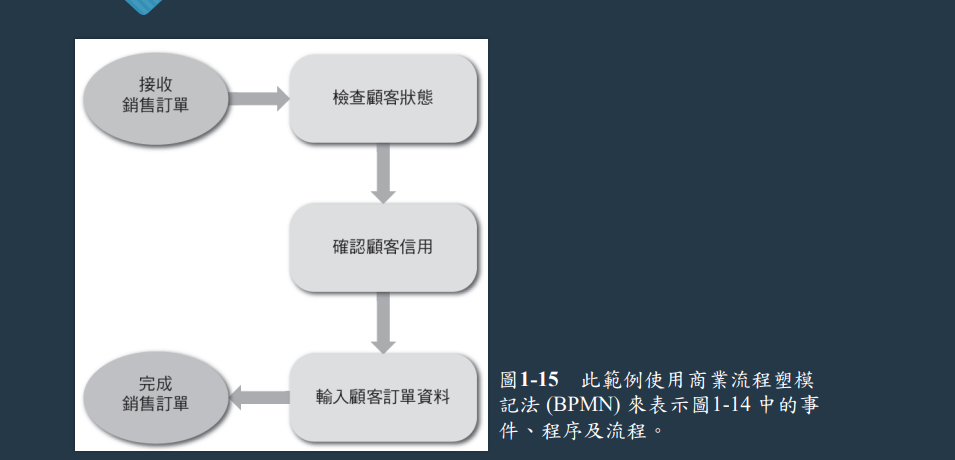
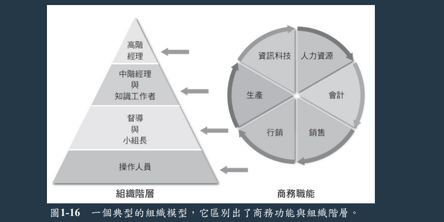
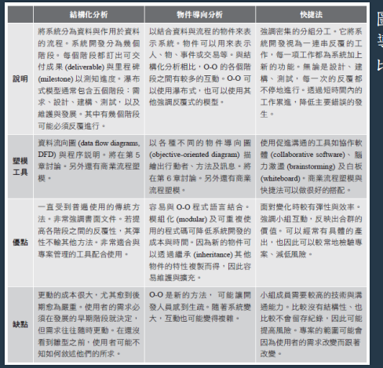
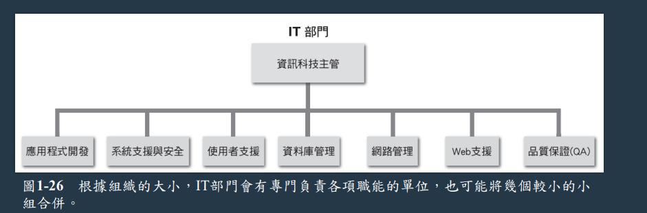

陳杰龍的筆記網站
陳杰龍的筆記網站 主頁
主頁 歸檔
歸檔 分類
分類 其他
其他 關於我
關於我 系統分析與設計- 第一章 簡介
系統分析與設計- 第一章 簡介
筆記說明
此筆記用途在於國立屏東大學資訊管理系大三上系統分析與設計重點整理
並非所有人都適用
如果有侵犯到版權的問題在聯繫我，再聯絡我，我在移除
並非所有人都適用
如果有侵犯到版權的問題在聯繫我，再聯絡我，我在移除
資訊科技
- 系統分析與設計(system analysis and design)是發展高品質資訊系統的逐步過程
- 資訊系統(information system)結合資訊科技、人員及資料來支援企業的需求
- 系統設計師職責
- 協助規劃、開發、維護資訊系統
- 管理 IT 專案、召開會議、進行簡報，以及撰寫備忘錄、報告及文件
資訊系統
- 系統(system)是由一組產生特定結果的相關要件組成
- 關鍵任務系統是指對公司營運有非常重大影響的系統
- 系統必須輸入資料(data)
- 資訊(information) 則是對使用者有價值的輸出資料
- 一個完整的系統透過硬體、軟體、資料、流程、人員
- 硬體，包含資訊系統內的實體事務
- 軟體
- 系統軟體，用來管理軟體
- 應用軟體，支援日常商業功能
- 水平系統，適合不同種類的公司使用
- 垂直系統，針對特定需求的公司使用
- 老舊系統，之前的舊系統，要考慮其相容性
- 資料，資訊系統裡面的原料
- 流程，使用者、經理、IT人員為達成特定結果所經歷的任務與需要執行的業務功能
- 人員，與資訊系統相關的利害關係人
網路商業策略
- 三個主要趨勢
- 全球化快速增加
- 提供無縫隙資料存取並進行技術整合
- 雲端運算服務成長
- 網際網路模式
- 電子商務
- 使用者介面可實現資料庫管理軟體與 Web server 進行互動
- B2C
- B2B
- 供應商關係管理，指某項商品提供所需原料、服務、功能的所有公司
企業營運塑模
- 業務概況
描述公司的使命、功能、流程、組織、產品、服務、顧客、供應商、競爭者、限制，以及未來方向 - 商業流程，能被記錄成文件的特定交易、事件、任務或結果
- 商業流程塑模(business process modeling, BPM)是以圖形化方式顯示一個或多個商業流程
- 商業流程塑模記法(business process modeling notation, BPMN)

企業資訊系統
- 員工不論職位高低，都必須使用可提升生產力的辦公室系統
- 第一線的操作員也必須接觸決策支援系統
- 現今的系統應該從其功能及特性來區分
- 企業運算(enterprise computing)，支持整體企業運作與資料管理需求的資料庫系統
- 企業資源規劃(enterprise resource planning, ERP)系統，提供高效率全方位管理
- 交易處理系統(transaction processing (TP) systems)，處理日常業務運作產生的資料，如：顧客訂單處理、應收帳款等
- 商務支援系統(business support systems, BSS)，提供和工作有關的資訊，以支援公司內各階層的使用者，如
- 管理資訊系統(management information systems, MIS)
- 無線射頻辨識 (radio frequency identification, RFID)
- 知識管理系統(Knowledge management system)，使用知識庫以及推理法則
- 知識庫 (knowledge base)是由一個大型資料庫所組成，輸入關鍵字或一般英文的疑問句來尋找所需的資訊
- 推理法則 (inference rule)則是識別資料型態與關係的邏輯法則
- 數位助理
- 系統整合，將交易處理、商務支援、知識管理以及使用者生產力等功能結合在同一個系統
- 使用者生產力系統，可提供生產力的科技
組織資訊模型
- 高階經理，擬定長期計畫
- 中階經理，提供只是、必要資源、績效回饋給督導和小組長
- 知識工作者(knowledge worker)對組織的基本功能提供支援
- 組織階層、商務職能示意圖
- 督導與小組長，負責監管操作人員，並且執行日常功能
- 操作人員
- 包含從交易處理系統取得與輸入資料的使用者
- 許多公司的操作人員也必須接觸到資訊以及做出過去應該是督導負責的決策

系統開發
- 示意圖
- 結構化分析
- 使用系統開發生命週期，對資訊系統進行規劃、分析、設計、建置以及支援等
- 結構化分析使用一連串的流程模型，以圖形來描述一套系統
- 系統規畫階段
- 對IT部門的請求開始，稱為系統請求(systems request)
- 初步調查(preliminary investigation)，其中重點為可行性評估(feasibility study)
- 系統分析階段(systems analysis phase)
- 建立新系統的邏輯模型(logical model)
- 建立商業、資料、流程及物件等模型
- 產生系統需求文件(system requirements document)
- 系統設計階段(systems design phase)
- 目的是創造一個滿足所有需求的具體模型(physical model) A
- 設計使用介面，識別出必要的輸出、輸入與流程
- 可交付成果是系統設計規格(system design specification) A
- 使用者與管理者不能對系統設計產生誤解
- 系統建置階段(systems implementation phase)
- 建置新的系統
- 撰寫程式、測試、撰寫文件(documented)及系統導入(installed)
- 系統必須功能完整、運作正常、文件完整
- 系統支援與安全階段(systems support and security phase)
- 系統必須具備安全、可靠、可維護及可延展等特性
- 系統在運作幾年後，大都需要重大更新或汰舊換
- 物件導向分析，將資料與處理資料的流程合而為一，類似於 OOP
- 快捷法
- 雛形(prototype)是資訊系統完成之前的早期工作版本
缺點：如果業務或IT沒有徹底了解問題時，有些決策下定後，可能還需要修改，導致大量重來。 - 建立一連串雛形，並根據使用者需求進行調整
- 開發人員也不斷地修正、擴充並合併先前的雛型，進而產生最終產品
- 強調不斷反覆開發，每一次開發都會更新上次的缺點
- 螺旋式模型 (spiral model)，表示一連串根據使用者回饋而進行的反覆、修正動作
- 雛形(prototype)是資訊系統完成之前的早期工作版本
- 系統分析師必須對方法有了解，才可夠選出適合的方案

資訊科技部門
- 應用程式開發，由使用者、管理者及IT 團隊成員所組成的小組負責開發
- 系統支援與安全，負責為系統軟硬體提供防護與維護服務
- 使用者支援，負責為使用者提供技術方面的資訊與訓練，並協助增加生產力
- 資料庫管理，涵蓋資料設計、管理、安全、備份及存取等
- 網路管理，包括網路方面的軟硬體維修、支援及安全
- Web 支援，設計與架構網頁、監看流量、管理軟硬體，以及連結 Web 式應用程 式與公司既有的資訊系統
- 品質保證，負責審查與測試系統，以確定規格與品質符合標準
系統分析師
- 對公司的資訊系統進行調查、分析、設計、開發、安裝、評估及維護等
- 經常與使用者和管理者在公司裡外進行互動
- 角色
- 擔任管理者和程式設計師的翻譯者
- IT災難時的最佳防衛者
- 最有價值的技能：傾聽的能力
- 向使用者尋求回饋與意見，以避免專案方向走偏
- 所需知識、技能、背景
- 技術知識
- 溝通技巧
- 商業技能
- 批判性思考技能
- 有學士學位，並有 IT 經驗
- 有進行認證
資訊科技部門
- 應用程式開發，由使用者、管理者及IT 團隊成員所組成的小組負責開發
- 系統支援與安全，負責為系統軟硬體提供防護與維護服務
- 使用者支援，負責為使用者提供技術方面的資訊與訓練，並協助增加生產力
- 資料庫管理，涵蓋資料設計、管理、安全、備份及存取等
- 網路管理，包括網路方面的軟硬體維修、支援及安全
- Web 支援，設計與架構網頁、監看流量、管理軟硬體，以及連結 Web 式應用程 式與公司既有的資訊系統
- 品質保證，負責審查與測試系統，以確定規格與品質符合標準
資訊科技趨勢
- 發展最快的產業之一
- 重要趨勢
- 快捷法
- 雲端運算
- 資料科學
- 行動裝置
- 服務導向
- 社群媒體網路